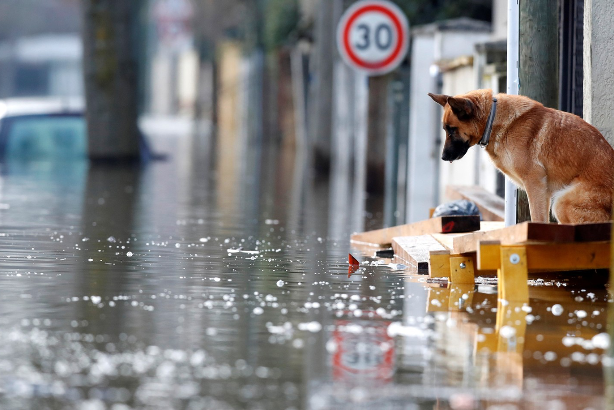

¡¡Grecia Lucha contra las Inundaciones y el Barro tras la Tormenta Daniel!!
Ocho días después de la tormenta Daniel, el centro de Grecia sigue sumergido en el barro tras inundaciones mortales que han dejado 15 víctimas. Miles carecen de electricidad y agua potable.
El gobierno ha declarado el estado de emergencia y se movilizan esfuerzos de recuperación. La comunidad internacional brinda apoyo mientras los residentes locales muestran resiliencia en la limpieza y reconstrucción de sus hogares.